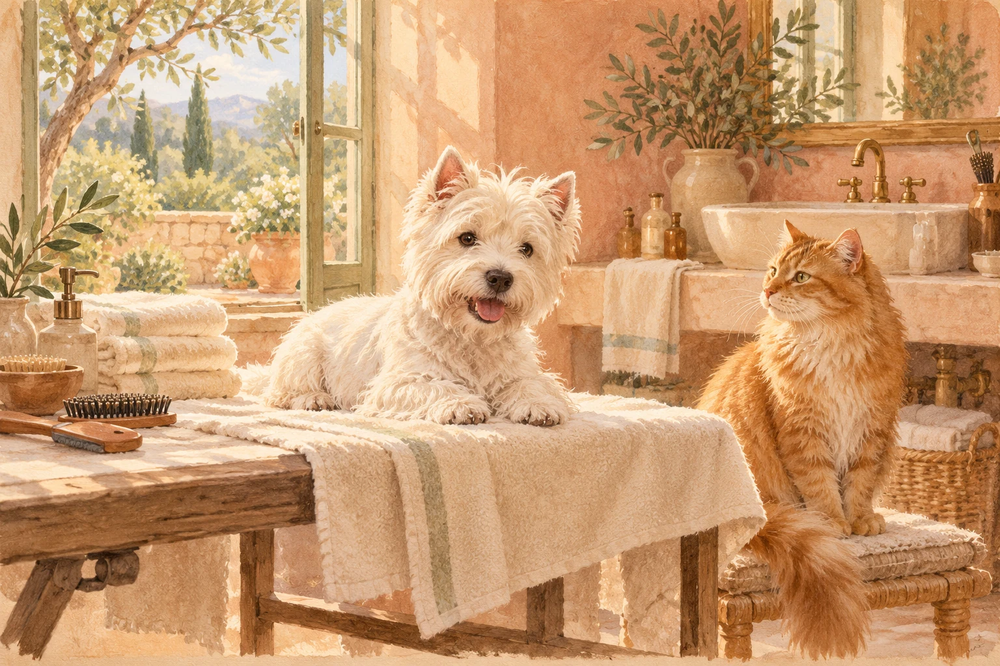

Стрижка и вычёсывание
Уход за собаками и кошками, работа с формой и шерстью — по согласованию с мастером.
Студия Натальи Астрелиной
Стрижка, вычёсывание и уход за шерстью собак и кошек. На Кантемировской, у метро «Лесная».

01Студия и характер
Студия Натальи Астрелиной работает на Кантемировской, 33. На официальной странице представлены стрижки, экспресс-линька, уход за когтями, ушами и глазами.
Обычный уход. Личная история.
Чистота и красота — от носа до кончика хвоста.
02Детали ухода
На странице студии есть отдельные подборки работ со шпицами, йоркширскими терьерами, корги, чихуахуа и кошками. Смотрите реальные работы перед выбором формы.
Уход за собаками и кошками, работа с формой и шерстью — по согласованию с мастером.
В официальном описании есть уход во время линьки для собак и кошек.
Небольшие уходовые процедуры, состав и необходимость которых уточняются перед визитом.
Точный состав, продолжительность и стоимость ухода подтверждает мастер перед записью.
03Выбрать задачу
Три коротких ответа превратятся в понятный запрос мастеру. Здесь нет случайной цены — стоимость и состав ухода подтвердит салон.
Для точного ответа добавьте породу, возраст, вес и свежую фотографию шерсти при обращении.
04Первый визит
Сохраните маленький план встречи. Отмечайте готовые пункты — и обсудите оставшиеся вопросы с мастером.
Настоящие питомцы. Настоящие работы.
Иллюстрация задаёт настроение этой истории. Реальные стрижки, питомцы и жизнь студии — на её официальной странице. Выберите близкий вам результат и покажите его мастеру.
Смотреть работы студии05До первого «здравствуйте»
Несколько вопросов, с которых удобно начать знакомство со студией.
При обращении укажите породу, вес, состояние шерсти и желаемый результат. Салон подтвердит состав ухода и стоимость. Открытая запись, если она доступна, содержит актуальные варианты услуг.
Заранее расскажите о возрасте и поведении питомца, реакции на воду, расчёску и фен. Формат и длительность первого визита лучше согласовать с мастером.
Да, подготовьте референс для обсуждения. Подходящую форму мастер сможет уточнить с учётом типа и текущего состояния шерсти.
Нажмите «Выбрать время». Откроется список официальных способов связи с салоном. При наличии онлайн-записи вы перейдёте в действующий сервис; в остальных случаях согласуйте время напрямую.
Возможность присутствия и формат работы уточните в студии до визита. Это зависит от питомца, процедуры и условий салона.
06До встречи в студии